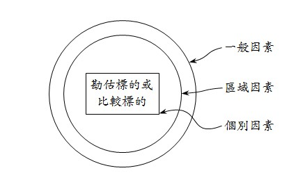
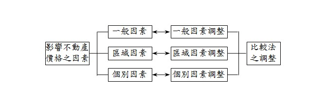

比較法何以無一般因素調整？
• (一) 一般因素、區域因素及個別因素：
影響勘估標的或比較標的價格之因素，可分為一般因素、區域因素及個別因素等三個層次。如圖1所示。
-
一般因素：指對於不動產市場及其價格水準發生全面影響之自然、政治、社會、經濟等共同因素（估技§2，估技代表不動產估價技術規則）。
-
區域因素：指影響近鄰地區不動產價格水準之因素（估技§2）。
-
個別因素：指不動產因受本身條件之影響，而產生價格差異之因素（估技§2）。
[圖片1]
圖1 影響不動產價格之因素
• (二) 區域因素調整及個別因素調整：
比較法係以比較標的價格為基準，經過情況、價格日期、區域因素及個別因素等四項調整，以推算勘估標的價格之方法。其中，區域因素調整及個別因素調整之意涵如下：
-
區域因素調整：所選用之比較標的與勘估標的不在同一近鄰地區內時，為將比較標的之價格轉化為與勘估標的同一近鄰地區內之價格水準，而以比較標的之區域價格水準為基礎，就區域因素不同所產生之價格差異，逐項進行之分析及調整（估技§19）。
-
個別因素調整：以比較標的之價格為基礎，就比較標的與勘估標的因個別因素不同所產生之價格差異，逐項進行之分析及調整（估技§19）。
• (三) 兩者連結（如圖2所示）：
-
一般因素與一般因素調整之連結：勘估標的與比較標的同位於國內，一般因素相同，則無須進行一般因素調整。實務上，所蒐集比較標的大都為國內交易案例，鮮少國外交易案例，故比較法無一般因素調整。但如勘估標的為台灣之國際連鎖飯店或百貨公司，若國外地區（如香港、上海、東京、曼谷等）屬於同一供需圈，所蒐集比較標的為國外交易案例，因二國之政經情況不同，則必須進行一般因素調整。
-
區域因素與區域因素調整之連結：勘估標的與比較標的位於同一近鄰地區，區域因素相同，則無須進行區域因素調整。相反地，勘估標的與比較標的不在同一近鄰地區，區域因素不相同，則必須進行區域因素調整。
-
個別因素與個別因素調整之連結：不動產具有異質性。勘估標的與比較標的之個別因素不同，則必須進行個別因素調整。
[圖片2]
圖2 影響不動產價格之因素與比較法之調整的連結
這篇文章考過哪些題目
讀完試著自己作答，再點進去對答案。依文字相似度自動比對，不一定完全對應。
- 95 高考《土地估價》第 2 題
土地估價應蒐集之影響因素資料為何？並請列舉影響工業區之區域因素，藉以說明其用於區域因素調整之意義。（25分） - 108 經紀人《不動產估價概要》第 19 題
有關區域因素之調整，下列敘述何者為正確？ - 113 經紀人《不動產估價概要》第 7 題
有關比較法的敘述下列何者錯誤？ - 100 高考《不動產估價》第 2 題
運用比較法時，以比較標的之價格為基準，進行調整推算勘估標的之價格，須考慮那四大調整項目？請分別就調整之定義與重點說明之。… - 100 高考《不動產估價》第 2 題
運用比較法時，以比較標的之價格為基準，進行調整推算勘估標的之價格，須考慮那四大調整項目？請分別就調整之定義與重點說明之。… - 109 高考《不動產估價》第 2 題
農地價格的決定因素，一般包括自然生產力、農業設施、都市距離，以及相關法令制度。請以臺灣為例，說明估算農地價格時比較合適的… - 108 經紀人《不動產估價概要》第 20 題
下列敘述何者為正確？ - 109 經紀人《不動產估價概要》第 6 題
比較法以比較標的價格為基礎，下列那一項比較標的在正常情況下應排除適用？
另有 27 題相近，可從題目頁的「延伸閱讀」找到本文。
文章圖片

